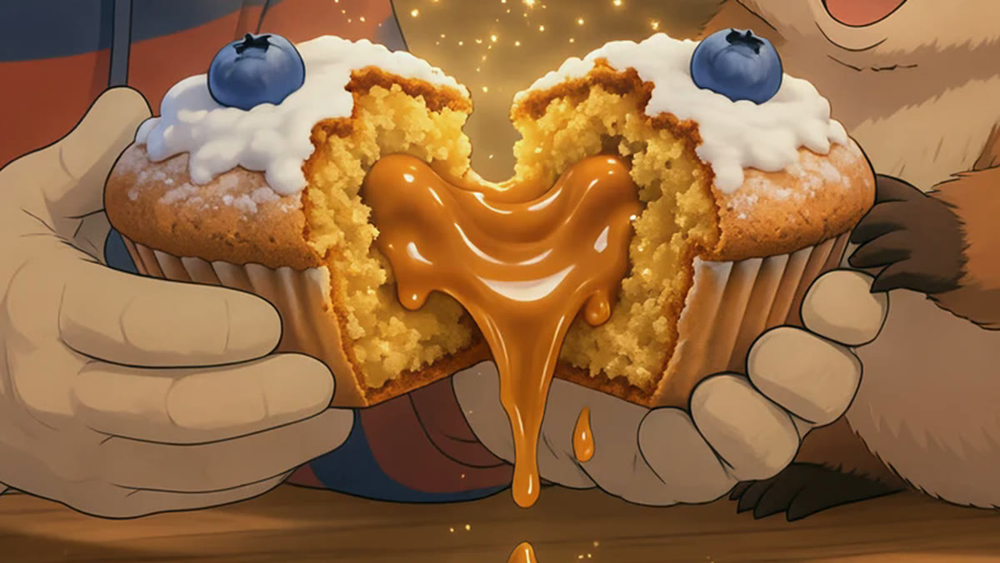

Episodio 1
El muffin tiene vida
Corto animado · 15 segundos
La historia
Es tarde de nieve en la cabaña. El Mago de Finlandia saca del horno una bandeja de muffins de arándano y, con un toque de varita, uno de ellos se eleva brillando. Mashavito no lo puede creer.
Al final, los dos sostienen juntos el muffin mágico, que todavía brilla. Lo que guarda adentro… es parte del secreto.
La receta
Muffins de arándano con corazón de dulce de leche.

Receta secreta
Cómo se hacen estos muffins es un misterio de la cabaña. Digamos que es magia.
Lo único que se sabe: llevan arándanos y dulce de leche.